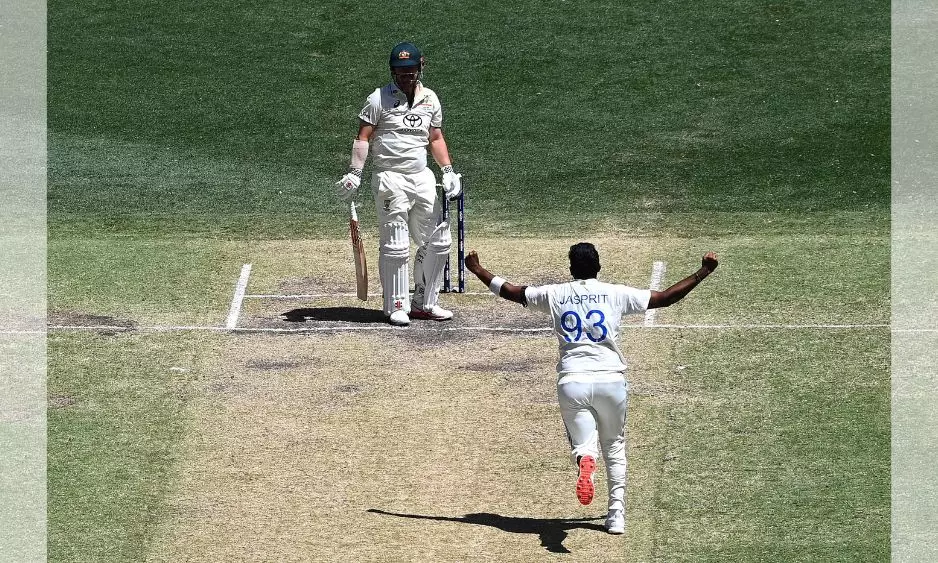
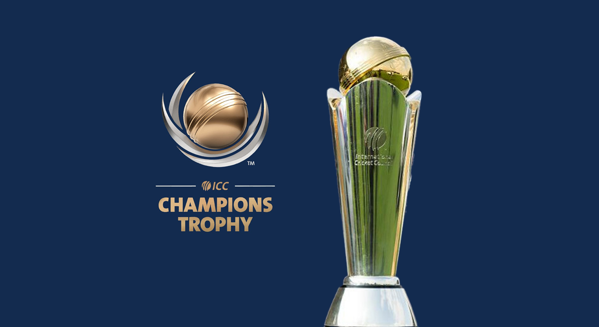
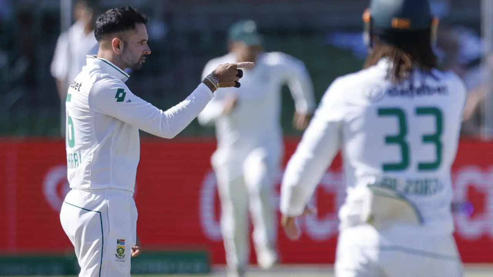

Border-Gavaskar Trophy 1st Test: Jasprit Bumrah led India breach Perth fortress, outclass hapless Australia

Pat Cummins's Australia have had a knack for delivering knockout punches to India on the grandest stages. Remember the WTC Final triumph at the Oval or silencing over a lakh Indian fans in Ahmedabad during the 2023 ODI World Cup final? This time, though, it was Jasprit Bumrah's turn to flip the script—and what a statement his side made in Perth! Bumrah's India hammered the Australians at their Optus fortress, handing them their first-ever defeat at the venue with a 295-run win in the opening Test of the Border-Gavaskar Trophy. After setting a mammoth 534-run target, India bowled Australia out for 238 to take a 1-0 lead in the five-match series.
India stormed back to the top of the World Test Championship (WTC) standings with 61.11 percentage points after Perth win. As for the margin, this victory is India's biggest ever, surpassing their previous record of 222 runs, set back in 1978 in Sydney when Australia fielded a weakened side amidst the mass exodus for the Kerry Packer World Series. A history-defining win, in more ways than one!
Who would have thought this comeback was on the cards after India’s dramatic collapse on Day 1? Bowled out for a mere 150, it seemed like the script was written for another Australian steamroll. But, as they say, there's something magical in the Australian air—or water—that transforms India. It was a showcase of every sporting cliché done right: audacious bounce backability, unwavering team spirit, a defiant never-say-die attitude, and self-belief that defies logic.
India delivered a performance for the ages, spearheaded by stand-in skipper Jasprit Bumrah. With eight wickets across the match and stellar centuries from Yashasvi Jaiswal and Virat Kohli in the second innings, India demolished a faltering Australia. This isn't just a win; it's India's largest Test victory by runs on foreign soil. Only once before has a team won by a bigger margin after being dismissed for 150 or fewer in the first innings-West Indies, against Australia in Bridgetown, 1991.
Coming off a shocking 3-0 home whitewash against New Zealand, India arrived underprepared and undermanned, missing skipper Rohit Sharma and an injured Shubman Gill. Yet, under intense scrutiny, coach Gautam Gambhir’s bold calls—including benching spin stalwarts R Ashwin and Ravindra Jadeja—paid off spectacularly. Bumrah was the beating heart of this triumph. His fiery late-day-one spell turned the tide after India’s dismal 150-run collapse on a winning toss. His leadership electrified a revamped squad, proving that the right spark can ignite even the toughest challenges.
Skipper Jasprit Bumrah (3/42) and Mohammed Siraj (3/54) led the charge on the fourth day, with Washington Sundar and Nitish Reddy providing crucial support by claiming a wicket each. India had set Australia an imposing target of 534 runs on day three. Starting the day at 12 for 3, chasing 534, it seemed only a matter of time before Australia would capitulate, and they eventually did, despite a spirited 89 from Travis Head that only delayed the inevitable.
In contrast to the previous two tours where India began in Adelaide, known for its batting-friendly conditions, Australia opted to start the series on the bounciest pitch in the country. The move worked initially, but only for a session and a half before it backfired. While Australia had hoped to exploit India's vulnerabilities, they also gambled on their own underperforming batting lineup. Key players like Steve Smith and Marnus Labuschagne have struggled with form for some time, and the decision to bring in rookie Nathan McSweeney, who is untested and not an opener, highlighted Australia's own transition phase—one that could prove even more challenging than India's.
By the third evening, Josh Hazlewood had seemingly given up, and it wouldn't be surprising if the Australian team management opts for flatter pitches in future matches to negate Bumrah’s threat. However, Bumrah, a bowler who can tighten the noose under any conditions, continued to dominate. On the fourth afternoon, Bumrah produced what could be considered the best of his eight wickets in the match, dismissing Head, who had been battling hard. Pitched on length, the ball climbed unexpectedly, catching the outside edge of Head’s bat and ending Australia's resistance.
PCB Names Condition To ICC For Agreeing To 'Hybrid' Champions Trophy: Report

Amid the ongoing impasse on Pakistan's hosting of the Champions Trophy 2025, the decision on the next year's marquee event is likely to be announced by the International Cricket Council (ICC) on Wednesday, sources told IANS on Monday. The Pakistan Cricket Board (PCB), which holds the hosting rights for the Champions Trophy, has reportedly demanded a written assurance from the international body on the hybrid model for future ICC tournaments after the Board of Control for Cricket in India (BCCI) communicated to ICC that the Indian team will not travel to Pakistan abiding by the Government of India's policy. Amid the stand-off, PCB has agreed to accept the hybrid model for the Champions Trophy with India playing its matches in Dubai while the rest of the tournament will be staged in Pakistan. India will also play the semifinal and final matches in Dubai, subject to qualification.
"Pakistan Cricket Board (PCB) wants a written assurance from the World body (ICC) regarding a hybrid model for the future international events to be hosted by India. Decision on Champions Trophy most likely by Wednesday," sources told IANS on Monday.
Meanwhile, the Emirates Cricket Board is keeping a close watch on ICC's decision on the Champions Trophy. Sources say Dubai is all but confirmed to host India's matches.
Ahead of reaching any consensus on the matter, PCB chairman Mohsin Naqvi met Pakistan's Prime Minister Shehbaz Sharif on Sunday as the former had repeatedly mentioned that the body would consult with the government before agreeing to any settlement.
The Champions Trophy 2025 is slated to be played from February 19 to March 9. But it has run into uncertainty after BCCI said it did not have the Indian government's consent to travel and play its matches in Pakistan. The tournament will feature eight teams, with four teams divided into two groups. The top two teams from both groups will play in the semifinals which will be followed by the title clash.
Last year, Pakistan hosted the Men's 50-over Asia Cup in a hybrid model after India refused to travel to the country. India played all their matches of the tournament in Colombo including the semifinal and final, which they won.
Maharaj wraps up 2-0 win to take South Africa to the top of WTC table

South Africa 358 and 317 (Bavuma 66, Markram 55, Jayasuriya 5-129) beat Sri Lanka 328 and 238 (Dhananjaya de Silva 50, Maharaj 5-76) by 109 runs
South Africa have moved to the top of the World Test Championship (WTC) table after a 109-run win over Sri Lanka at St George's Park. They swept the series 2-nil after bowling Sri Lanka out for 238 in 69 minutes on the final morning with the second new ball still 10.5 overs away.
Keshav Maharaj completed his tenth Test five-for, and fourth at St George's Park, and took four of the final five wickets on the last morning. Sri Lanka lost five wickets for 19 runs in 62 balls in a lower-order collapse that undid their work from the previous day. They were fairly well set overnight and resumed on 202 for 5, with two batters well-set on a fairly placid pitch. Kusal Mendis and Dhananjaya de Silva's sixth-wicket partnership was worth 83 and they both looked comfortable against a South African attack who admitted to searching a little too hard on the fourth day.
They returned fresh on the final morning, with a fired-up Kagiso Rabada still finding a hint of away movement in the easterly breeze. Maharaj broke the Kusal-Dhananjaya stand in the seventh over of the morning with a delivery that turned away from Kusal as he drove with hard hands. Aiden Markam took the catch low to the ground and the third umpire needed to check that he had fingers underneath it to confirm Kusal's dismissal.
Fourteen deliveries later, Rabada was rewarded for spells of accuracy and menace through the series with the wicket of the Sri Lankan captain. Dhananjaya drove at a ball that tailed away, edged and was caught behind.
With no recognised batters left, it was only a matter of time for Sri Lanka's tail. Prabath Jayasuriya's eyes lit up when Maharaj produced a long-hop and tried to smoke it over the offside but found the hands of Temba Bavuma at extra cover. Sri Lanka made it to the drinks' break but in the second over after the interval, Vishwa Fernando slogged across the line and sent the ball aerial. Marco Jansen at mid-on had enough time to get under it and take a simple catch. Jansen was given the ball in the next over and only needed one short delivery to get rid of Lahiru Kumara, who swung hard and top-edged. Ryan Rickelton, at short mid-wicket, judged the catch well in a mild swirl and completed South Africa's series win.
South Africa are now one win away from a guaranteed place at next year's final. They can get there with a victory over Pakistan at home in either the Boxing Day and New Year's match, which are their last of this cycle. Sri Lanka remain in contention but must beat Australia at home early next year and hope other results go their way.